速览
开发了却没能问世的作品多得是，樱井作为开发者也见闻过许多中止。其中多数是在向公众发表前就中止的，有些是会让人吃惊的系列作，却在玩家不知道的地方悄悄断了气。这对谁都不好，想尽量避免。首先开发者很可怜：花了几个月、也许几年做的东西见不到天日，相当伤心。但另一方面，作为公司职员制作的话，即使没有成果也应该能拿到工资（如果公司还在）。受开发中止或延期冲击最大的终究是公司：完全失去收益，维持费部分成了亏损，哪怕只错失一部，公司也可能真的倾斜。中止的理由中，「公司维持不下去」大概占很多：不只是公司倒闭，资金周转紧张时停掉前景不佳的项目、集中资源于确定的项目也很常见。中止多由今后要花的费用与可得利益的预期平衡来判断；当然也可能比预想卖得好得多，但途中没出现苗头却描绘乐观的预期很难。开发最后阶段最花钱：需要调试、宣传，人员最多。若判断承受不住，适当撤退（像止损那样）也是正确的经营判断。他认为开发者也必须意识到中止的风险与设想：不要以为只要完成各自被分配的工作，东西就会完成；为了完成，做什么才合适——越能俯瞰全局越有利。为了建设性地推进，能做的就互相协作吧。世上发售了大量游戏，背后也有无人知晓就消失的作品；正因知道这些，游戏能平安发售才值得感恩。
1. 悄悄消失的作品 0:06
开发了却没问世的作品多得是，樱井作为开发者也见闻过许多中止。
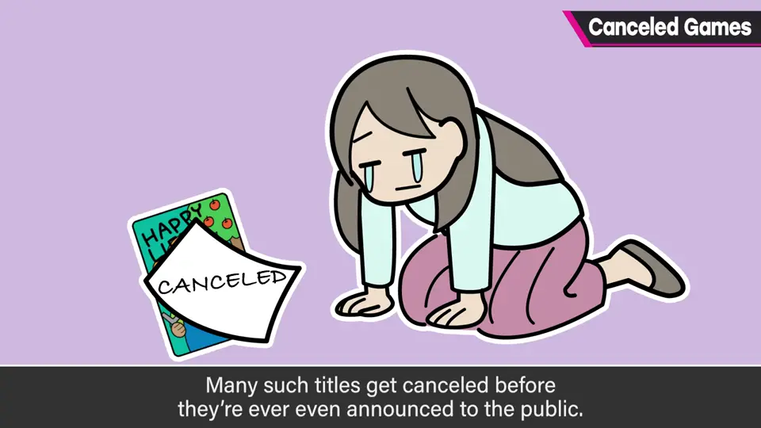
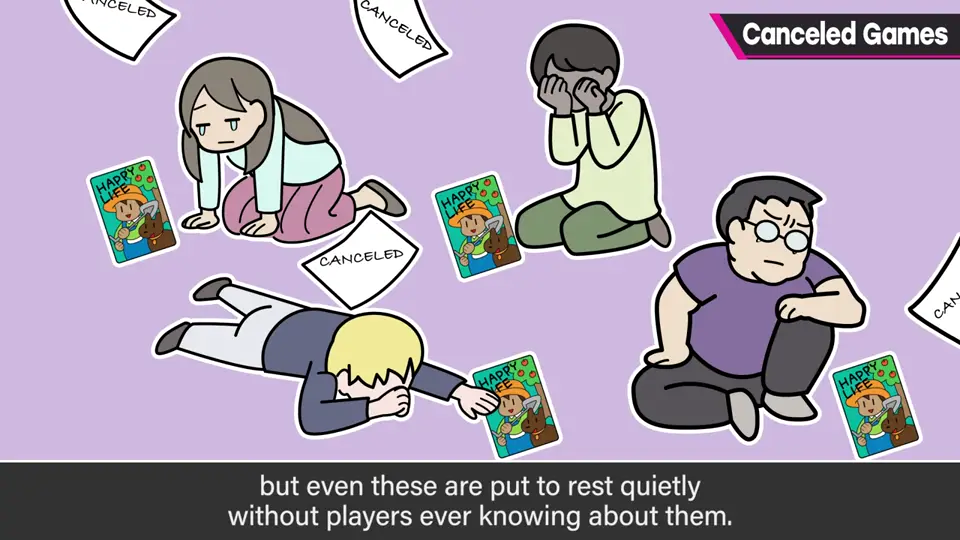
多数在向公众发表前就中止，其中也有令人吃惊的系列作，在玩家不知道的地方悄悄断了气。
2. 谁受伤最重 0:41
开发者很可怜：几个月甚至几年的心血见不到天日，非常伤心。
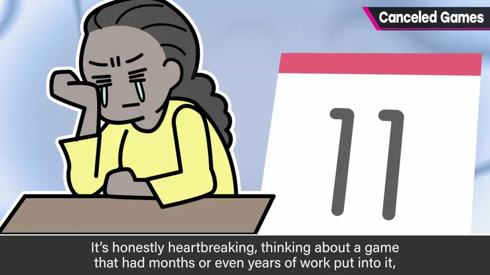
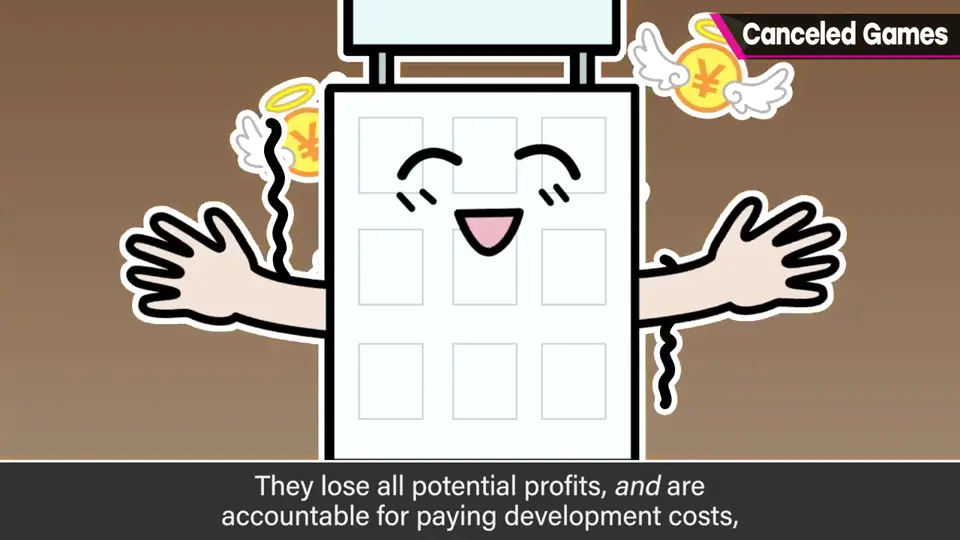
但作为公司职员，即使没有成果也应能领到工资（如果公司还在）。
3. 中止的判断 1:13
中止的理由中，公司维持不下去大概占很多：资金紧张时停掉前景不佳的项目、集中于确定的项目，也很常见。
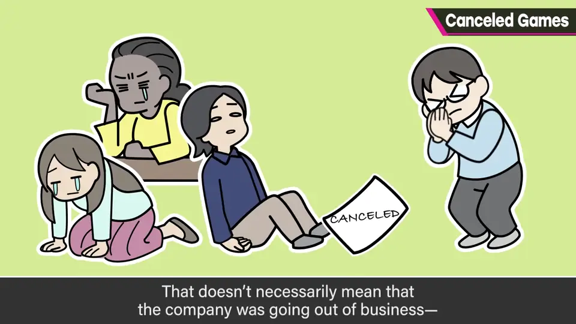
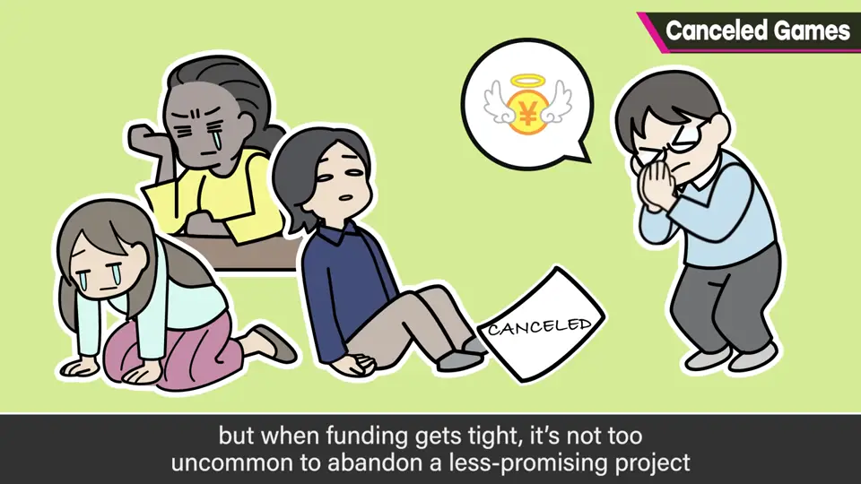
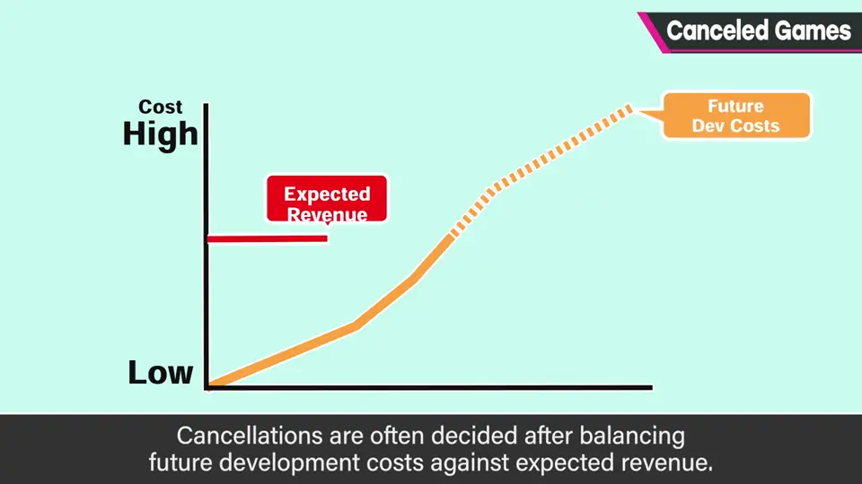
当然也可能比预想卖得好得多，但途中没出现苗头却描绘乐观预期很难。
开发最后阶段最花钱：需要调试、宣传，人员最多。若判断承受不住，像止损一样适当撤退，也是正确的经营判断。
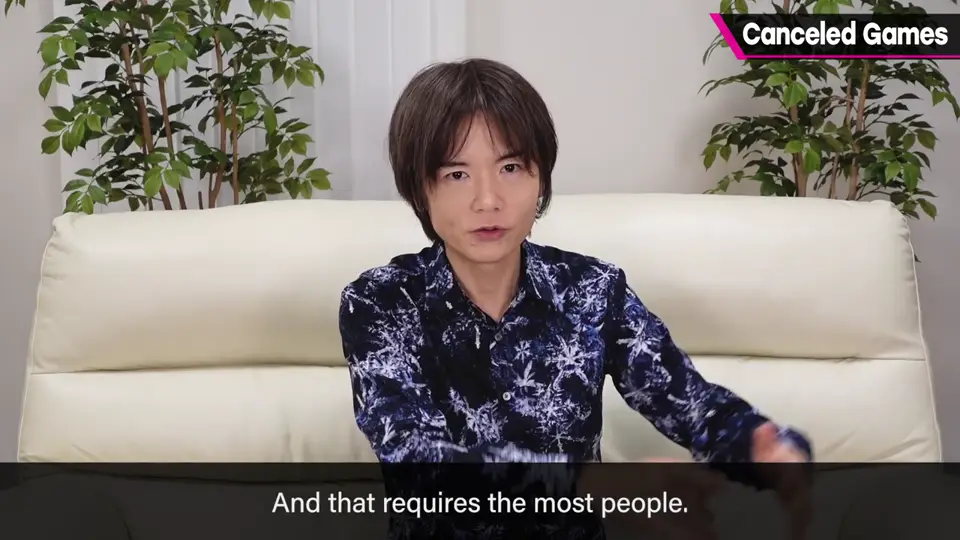
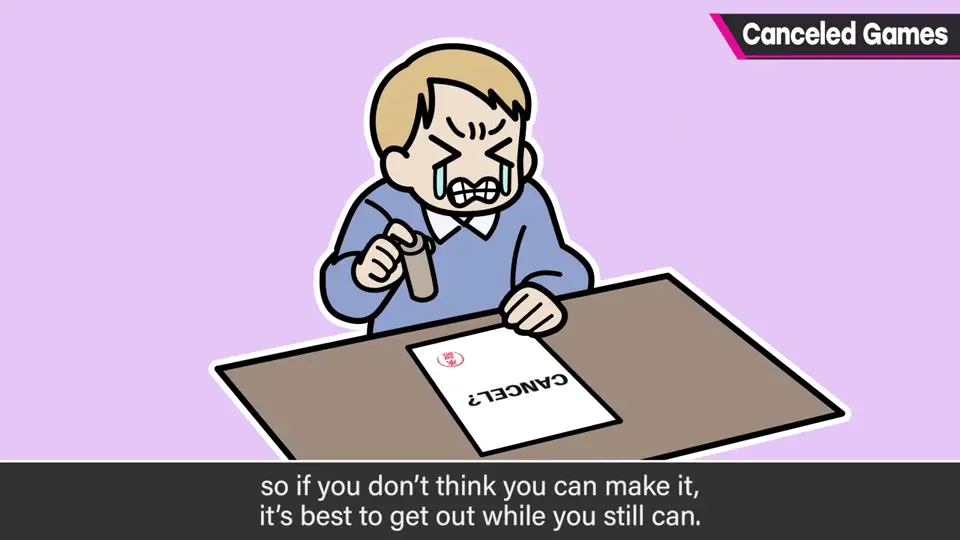
4. 开发者能做什么 2:22
开发者也必须意识到中止的风险与设想：不要以为只要完成分内工作，东西就会完成。
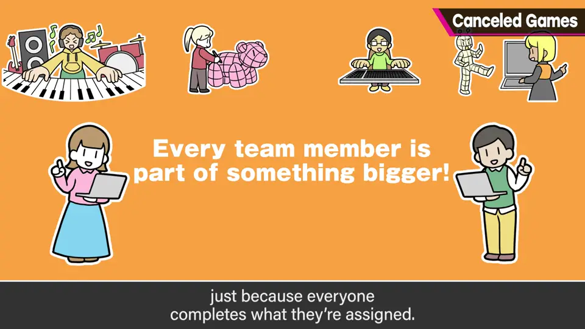
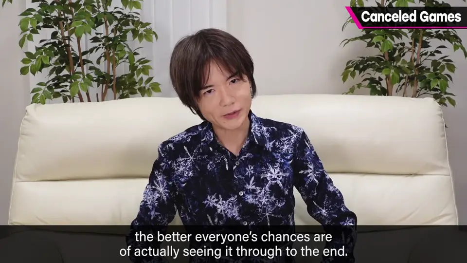
5. 感恩发售 2:40
世上发售了大量游戏，背后也有无人知晓就消失的作品。正因知道这些，游戏能平安发售才值得感恩。
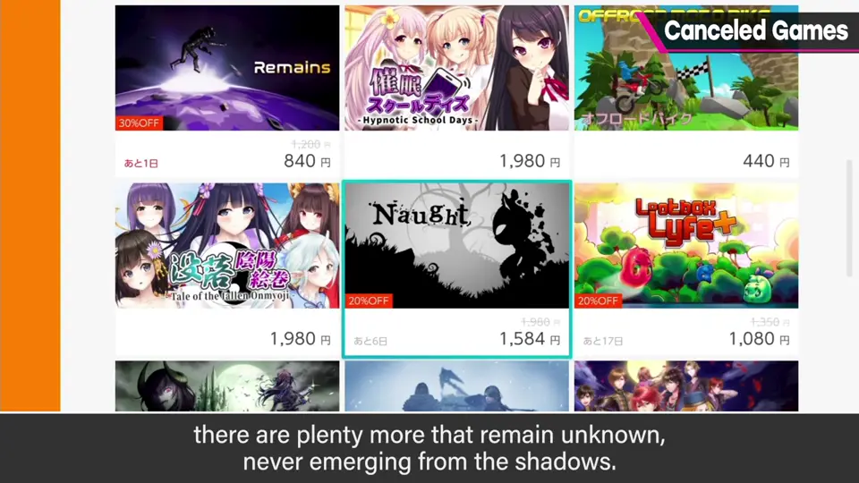
自测题
1. 开发中止的冲击谁最大？为什么？
公司：收益全失，维持费成为亏损，一部失败就可能让公司倾斜。 1:10
2. 中止多由什么来判断？
今后要花的费用与预期收益的平衡。 1:44
3. 樱井建议开发者如何面对中止风险？
意识到风险，不只做分内事，尽量俯瞰全局、建设性协作推进完成。 2:32